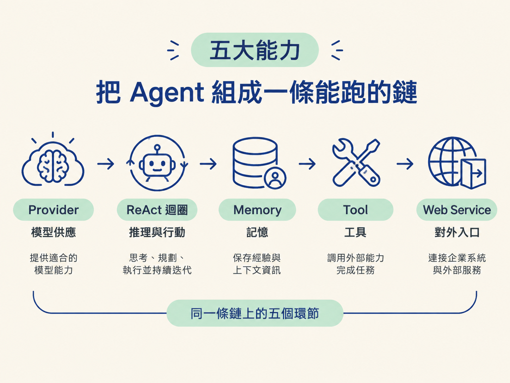
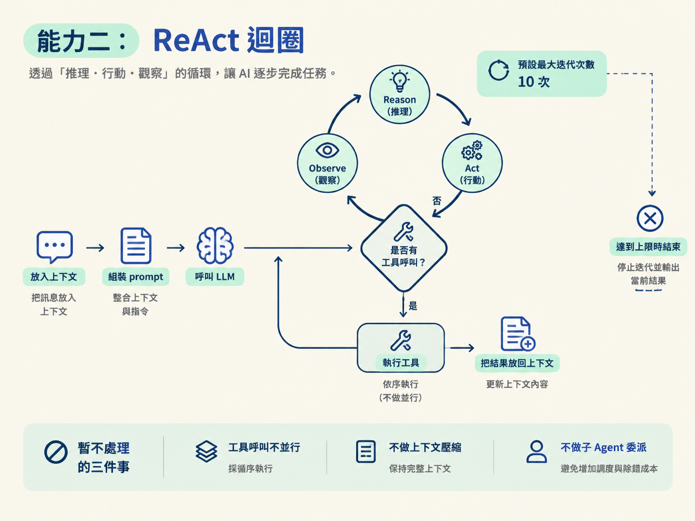
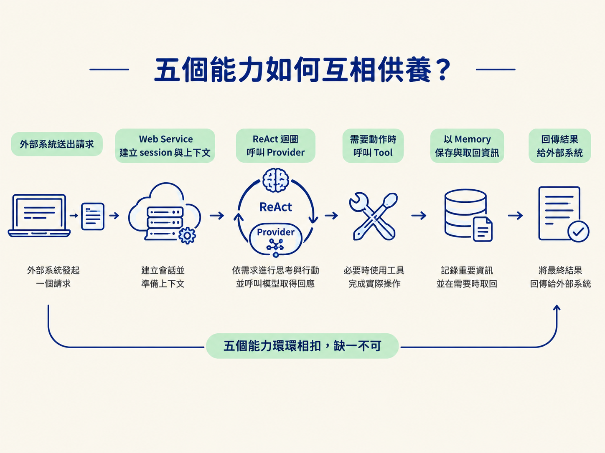

一個 Agent 不只是「接上 LLM 就能聊天」。它還要知道該用哪個模型、如何反覆思考與執行、怎麼保留記憶、如何操作外部工具，以及外部系統要從哪裡呼叫它。少了其中一環，系統就可能只會回答，卻不能完成工作。
OryxOS 的核心階段不追求一次做完所有企業功能，而是先建立一條最短、真的能跑的鏈。這條鏈由五個能力組成，每個能力都處理一個明確問題。

| 能力 | 它在回答什麼問題 | 類比 |
|---|---|---|
| Provider | 要用哪個模型、怎麼呼叫它 | 引擎的燃料供應 |
| ReAct 迴圈 | Agent 怎麼一步步想與做 | 心跳 |
| Memory | 怎麼記住上一輪與上一次 | 記憶 |
| Tool 體系 | 怎麼真的動手做事 | 手腳 |
| Web Service | 外部怎麼叫它 | 對外窗口 |
這五個能力不是任意拼湊的零件，而是 Agent 從「能思考」走到「能被使用」所需的最短路徑。核心階段先把主幹做穩，再把降級、治理、即時通訊等擴展能力往後放。
Provider 把「呼叫模型」收斂成一個統一介面。上層程式不需要知道每家模型的連線細節，而是透過 Spring AI Alibaba 的 ChatClient 連接器使用不同模型。
每個 Provider 具備幾項基本屬性：
Profile 只需要引用 Provider 名稱，不用把 API key 或模型設定散落在業務程式碼裡。這一層很重要，因為模型更換的速度通常比業務邏輯快。把 Provider 做成可替換的插件，換供應商時就不必連上層流程一起改。
核心階段刻意保持簡單：不做失敗降級，也不做競速（hedge racing）。模型呼叫失敗就直接往上拋；成本資訊則先記錄基本資料，包括 tokens、Provider 與模型。
ReAct 迴圈是 Agent 的大腦。它把 Reason（推理）與 Act（行動）交替串起來：先把訊息放進上下文，組裝 prompt 後呼叫 LLM；如果 LLM 要求工具，就執行工具，把結果放回上下文，再問一次 LLM。
這個過程會持續到 LLM 產生最終回覆，或達到最大迭代次數。預設上限是 10 次，Profile 可以覆寫這個設定。
loop (max 10):
resp = llm(prompt)
if resp.hasToolCall:
result = execute(resp.toolCall)
context.append(result)
else:
return resp核心迴圈只有幾十行，刻意自己手寫、不依賴框架黑盒。這樣做的價值不只是程式碼少，而是每一次 Reason、Act、Observe 都能被看見，出了問題才知道是模型判斷錯、工具執行錯，還是工具結果讓下一輪判斷偏掉。
核心階段暫不處理三件事：工具呼叫採循序執行，不做並行；不做上下文壓縮；不做子 Agent 委派。這些功能會增加調度與除錯成本，先不放進最短可跑路徑。

Agent 如果每次都從零開始，對話就像每一輪都把白板擦乾淨。因此 OryxOS 規劃三層記憶，但核心階段只先實作兩層。
| 層 | 核心階段 | 做法 |
|---|---|---|
| 會話記憶 | 做 | 存 SQLite，用 channel + user + profile 定位；超出上下文視窗就截斷 |
| 長期記憶 | 做 | 就是一個 MEMORY.md 檔案；靠 save_memory / recall_memory 兩個工具寫入與召回，啟動時注入，約 4000 字上限 |
| 情景記憶 | 推遲 | 核心階段不做 |
會話記憶解決的是「這一輪對話不要失憶」。它用 channel、user、profile 找到對應歷史，當內容超過上下文視窗時就截斷，避免 prompt 無限制膨脹。
長期記憶則很直接：核心階段只使用一個 MEMORY.md，不是資料庫表。Agent 透過 save_memory 寫入，透過 recall_memory 召回，啟動時再把內容注入上下文，大小約限制在 4000 字。
這裡刻意不做自動事實抽取、語義檢索、Memory Wiki 或矛盾偵測。理由很實際：記憶系統越聰明，越可能把不重要或錯誤的資訊塞進上下文，反而干擾模型判斷。先讓 Agent 穩定記住必要內容，跨會話的智慧留到擴展階段。
模型能提出建議，但不能直接讀檔、執行命令或呼叫外部系統。Tool 是 Agent 的手腳，負責把文字判斷轉成實際動作。
核心階段的工具分成兩類。第一類是內建工具：
save_memory / recall_memory第二類是Plugin Tool。依照客製化成本，分成三個級別：
| 級別 | 形式 | 什麼時候用 |
|---|---|---|
| 第一級 | 零程式碼：SKILL.md + MCP | 能用現成能力解決就優先用這級 |
| 第二級 | 輕程式碼：自寫 MCP server | 需要一點客製邏輯時 |
| 第三級 | 重程式碼：Java @Tool Bean | 要深度接進企業系統時 |
選擇順序很明確：能用第一級就別用第二級，能用第二級就別用第三級。工具越深入企業系統，維護、部署與安全責任就越重；不需要寫程式時，就不要為了客製化而增加成本。
安全方面，核心階段先靠應用層白名單阻擋越權，檢查三類內容：路徑、指令與網域。不啟用 SecurityManager，也不在這一階段加入完整 Tool Policy 或容器沙箱，這些留到擴展階段處理。
前四項能力讓 Agent 能運作，Web Service 則讓其他系統有入口可以使用它。它把引擎包成 REST 介面，讓外部能建立 session、送出訊息、查詢狀態，或直接 invoke Agent。
核心階段先做 10 個端點，涵蓋這些操作：
另外 15 個端點推遲。核心階段預設執行在內網，因此不做認證；同時不做 SSE、WebSocket 或 RBAC。這不是表示它們不重要，而是先把同步 REST 呼叫這條主路徑跑通。
這組介面可以支援同步呼叫、保持 session 的對話、webhook 觸發，以及跨語言呼叫。渠道方面，核心階段只有 CLI Channel，也就是 oryxos chat。企業微信、飛書、釘釘、Slack 等企業 IM 留到擴展階段；屆時它們應該呼叫 Web Service，而不是重新實作一套 Agent 邏輯。
這五個能力不是五座各自運作的孤島，而是一條從模型到外部使用者的鏈：
因此，缺少 Provider，Agent 沒有模型可用；缺少 ReAct，模型只能被動回答一次；缺少 Tool，它只能動嘴；缺少 Memory，每次都會失憶；缺少 Web Service，能力就只能困在本機或 CLI 裡。
核心階段真正要完成的，不是五個漂亮的模組名稱，而是這條能跑通的路徑：外部送進一個請求，Web Service 建立上下文，ReAct 迴圈呼叫 Provider，需要時使用 Tool，再透過 Memory 保留資訊，最後回傳結果。
